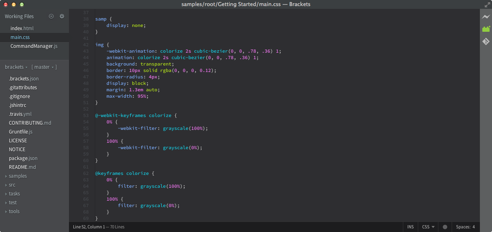

Description
Avec une prise en charge de préprocesseurs et des outils visuels ciblés, Brackets est un éditeur de texte moderne qui facilite la conception dans le navigateur. Il est intégralement conçu pour répondre aux besoins des designers web et des développeurs front-end.
Brackets est un éditeur open source pour le web design et le développement sur des technologies Web telles que HTML, CSS et JavaScript. Le projet a été créé et est maintenu par Adobe, et est publié sous une licence MIT. Il a été d'abord le projet qui servait de base à Adobe Edge Code, mais les projets ont fusionné, ce qui a permis à Brackets d'intégrer de nouvelles fonctionnalités liées à Adobe Creative Cloud. L'éditeur supporte l'ajout d'extensions qui peuvent ajouter des fonctionnalités à l'éditeur. Celles-ci peuvent être développées dans Brackets lui-même avec HTML, CSS et JavaScript, étant donné qu'il est écrit avec ces trois langages. Il est également possible de développer des thèmes. 
Ce qui fait réellement sa force est donc cette capacité à prendre en charge de nombreux langages mais aussi d'apporter de nombreuses fonctionnalités pratiques qui faciliteront la création de code pour les développeurs.
Il est possible d'installer des extensions pour obtenir des fonctionnalités supplémentaires.
Quick edit est une fonctionnalité offrant aux développeurs de modifier, directement en ligne, du code CSS, JavaScript. Cette fonctionnalité intégrée peut être appliquée à plusieurs fonctions ou propriétés simultanément et toutes les mises à jour sont appliquées directement sur le fichier associé avec les éléments modifiés. Fichier HTML : applique une édition rapide sur des éléments HTML pour permettre d'afficher toutes les propriétés CSS correspondantes sous l'élément sélectionné. Les utilisateurs ont la possibilité de créer de nouvelles règles CSS directement dans l'éditeur et d'éditer une propriété CSS de l'élément sans quitter le fichier HTML. Fichier JavaScript : sur des fonctions JavaScript, la fonctionnalité permet la même interaction que la modification d'un élément HTML, mais affiche le code contenu dans la fonction. Toutes les mises à jour du code contenu dans la fonction seront mises à jour automatiquement dans le fichier. Fichiers contenant des propriétés de couleurs RGB ou hexadécimales : pour les propriétés liées aux couleurs, Quick Edits affiche une boîte de prévisualisation de la couleur avec la possibilité de régler celui-ci.
Comment l'obtenir ?
Vous pouvez le télécharger ici.
Il est utilisable gratuitement.